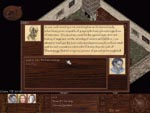

Tuition
| Max 3 Skill Points, Thaumaturgical Ritual "Sharpen Weapon" |
Background/Summary
Nearly all thaumaturgical training occurs in the Academy. Those who wish to begin training or further their knowledge in the thaumaturgical arts must be enrolled by the Academy's headmaster Glauke.
Player's Introduction
Speak with Glauke, who is located in the house immediately to the east of Sallio (the Watcher's Agent at the Academy).
Objectives
Enroll in the Academy.
Completing Objectives
|
1) To enroll, there must be someone in the party with thaumaturgy skill. If no one in the party has thaumaturgy skill, Glauke can teach anyone in the party with an intelligence of at least 13 the basics for a price of 200 drachs.
|

|
2) Once a party member has learned the basic cantrips, there are 3 ways for them to enroll into the Academy:
|
2.1) Pay the 50 drachs tuition fee
|
|
2.2) Earn a scholarship by passing the Gauntlet of Riddles. The Gauntlet of Riddles is a series of riddles which the leader must have an intelligence at least 19 in order to pass.
|
|
2.3) If the leader has a charisma and speech skill of at least 12, Glauke will ask the party to convince the mother of a young prodigy in Land's End to allow him to enroll. See River Prodigy for more info. Return to Glauke +3SP
|
|